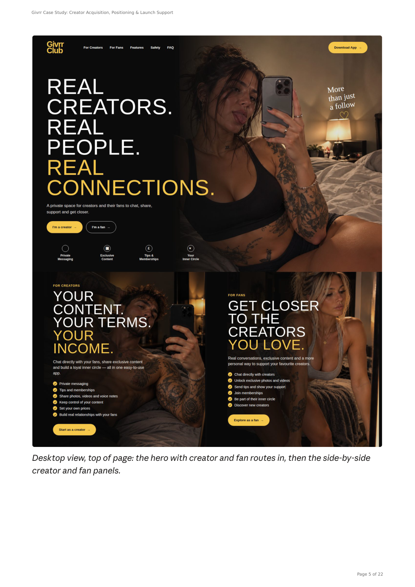
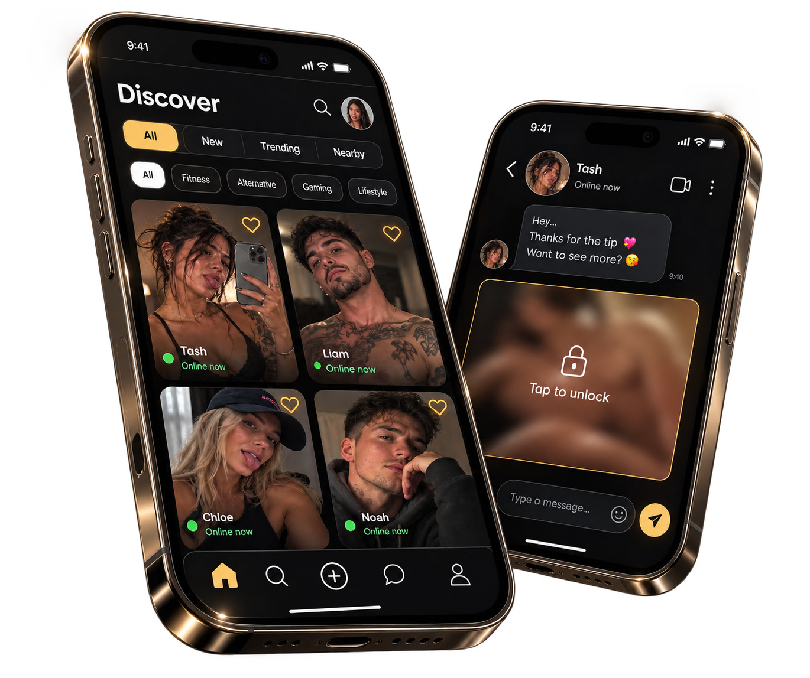
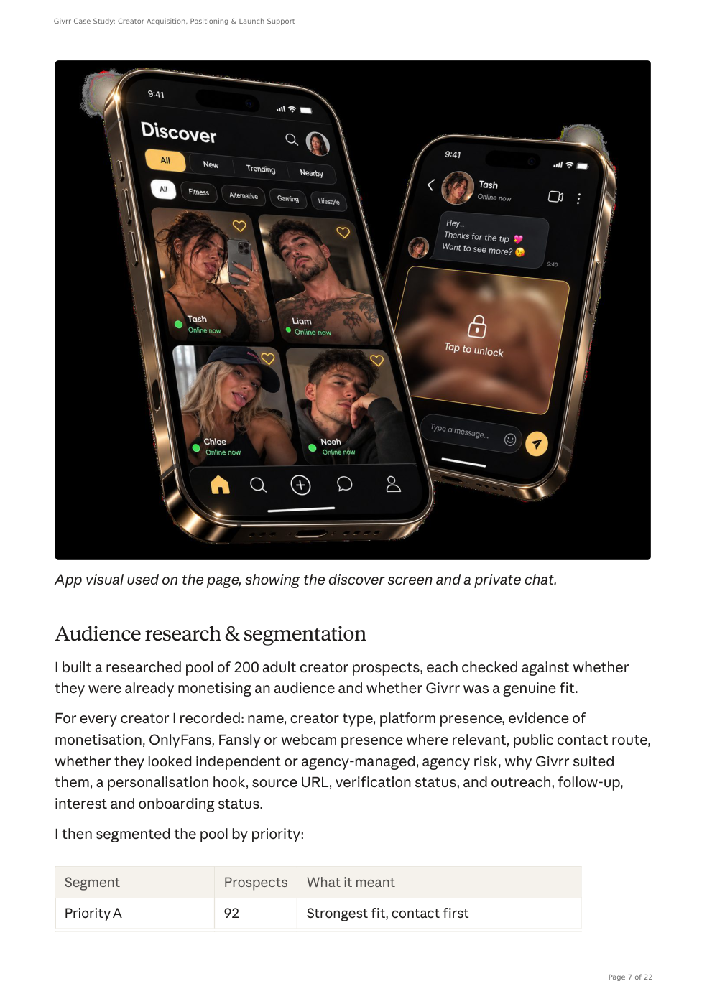
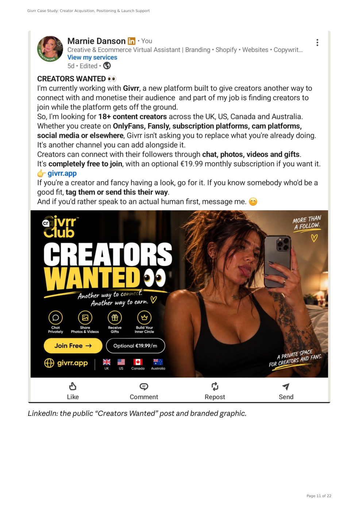

More than
a follow.
How I helped shape a new creator platform's launch — from positioning and landing-page direction to targeted research, direct outreach and campaign tracking.
Building the story.
Then taking it to the audience.
Givrr needed more than names on a spreadsheet. It needed a clear reason for creators to pay attention — and a practical way to reach them.
Givrr is a private messaging platform for adult creators and their fans. It offers creators an additional channel for paid, personal interactions without asking them to leave the platforms they already use.
The initial brief was creator recruitment. My involvement expanded across launch positioning, creator and fan messaging, landing-page strategy and design direction, prospect research, personalised outreach and tracking.
Research, outreach
and evidence.
These figures describe the work carried out, not claimed sign-ups or conversion results.
Why would an established creator try something new?
Creators already had platforms, audiences and established ways of working. Another invitation to join another app was easy to ignore.
The message had to make one distinction unmistakable: Givrr was an additional way to earn from private fan access, not a replacement for existing platforms.
- Explain the proposition in seconds
- Identify creators genuinely suited to private interaction
- Approach people personally, without sounding like spam
Four words that changed the conversation.
“More than a follow” became the core positioning: a more personal connection than a social-media follow. For creators, the messaging centred on control, access and earning potential. For fans, it focused on connecting more closely with creators they already follow.
That positioning carried through the landing page, direct messages, social posts and follow-ups.
The idea was deliberately simple: Givrr sits alongside a creator's existing platforms.

A launch page for
two different audiences.
The page needed to help creators and fans understand their separate journeys without overwhelming either. I developed the landing-page strategy, wrote the copy and shaped responsive desktop and mobile design direction.

Finding the right people. Not just more people.
I built a researched pool of 200 creator prospects and segmented it by fit, prioritising people already familiar with subscriptions, private content or one-to-one paid fan interaction.
- 92 highest-priority prospects
- 104 good-fit second-wave prospects
- 4 flagged for agency risk or extra care
- Top 100 trial pool created for targeted outreach
Research included public contact routes, platform presence, monetisation indicators and personalised reasons to approach each creator.

Real conversations, not a mass message.
I contacted 281 creators through researched public routes, adjusting the message from a simple invitation to a clearer explanation of what the platform could do for them.
The campaign also extended across LinkedIn, Facebook creator communities and TikTok, with messaging adapted to each channel.
Replies, agency responses, opt-outs and follow-up timing were tracked. Where someone asked not to be contacted again, that was respected and recorded.

“The positioning shaped the landing page. The research shaped who I contacted. The outreach informed the messaging.”
A campaign built to keep moving.
The project produced a complete set of launch and outreach assets: audience positioning, creator and fan copy, responsive landing-page direction, a 200-person researched pool, direct contact with 281 creators, three tested outreach approaches and a working tracker.
The tracker recorded outreach status, responses, follow-ups and opt-outs. The documented outcomes are campaign outputs; the case study does not claim a verified number of registrations or paying creators.
Not every project fits
neatly into a category.
Neither do I.
Strategy, research, digital design or the practical work that connects them. Tell me what you're working on.
LET'S TALK ABOUT YOUR PROJECT ↗